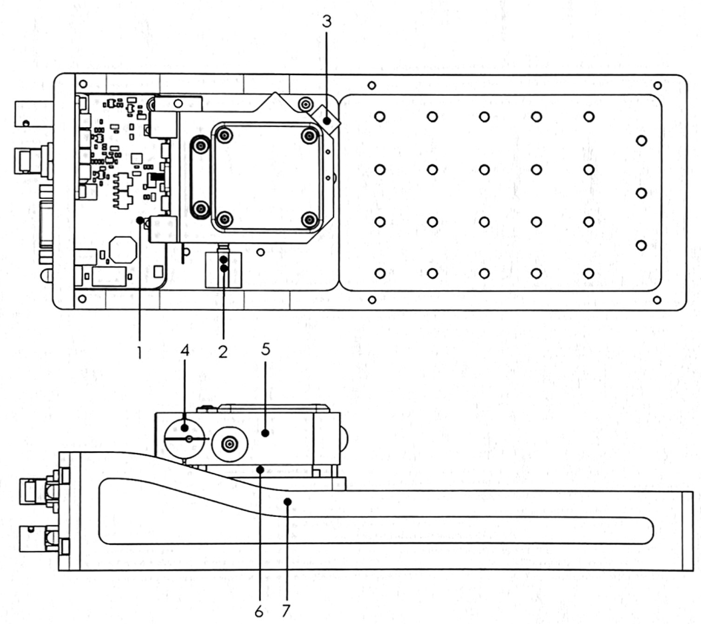
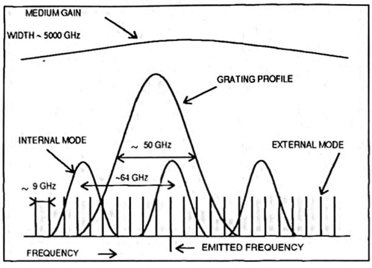
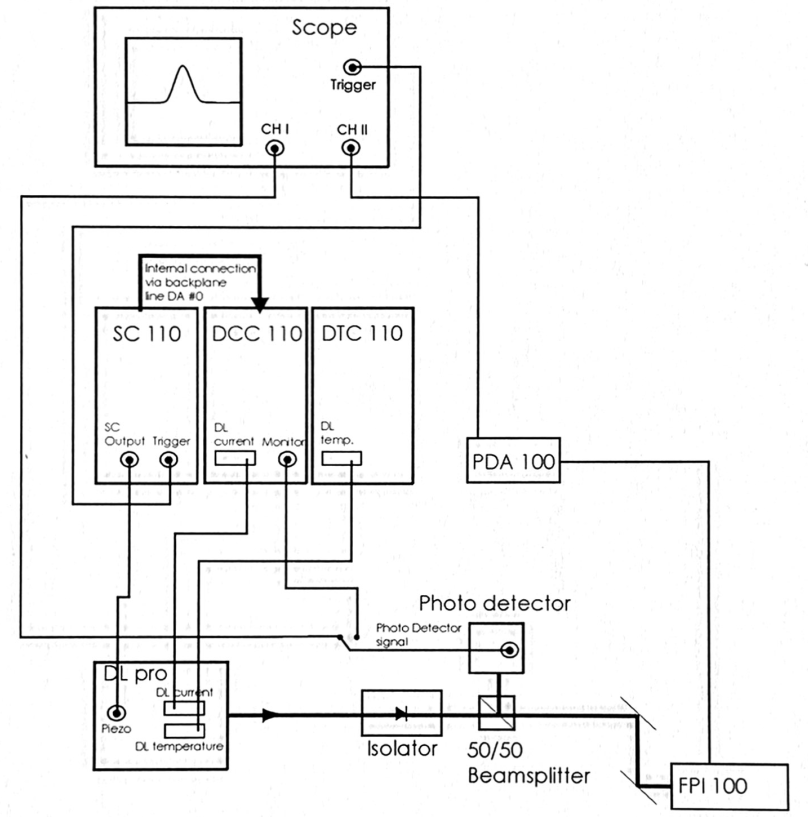
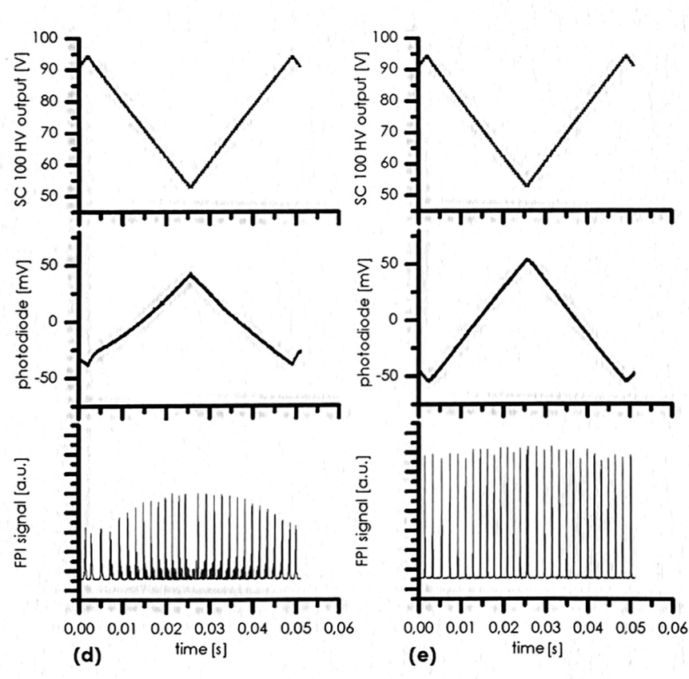

Lab Report
1 Research topic
Our experiment contains topics on
- laser physics: external-cavity diode-laser (ECDL)
- atomic physics: \(^{87}\text{Rn}(I=3/2)\)
- optics: alignment and optical components
- linear polarizer
- quarter wave plate
- half wave plate
- lense
- Fabry-Pérot interferometer
- spectroscopy techniques: Absorption, Flourescence, and Saturation
- spectroscopy: Fabry-Pérot interferometer
1.1 On finding a topic
We find it difficult to pin my interest onto one specific topic. We would like to set up an experiment capable to observe the atomic structure, i.e. to see the fine structure– or hyperfine structure splitting. To set up an experiment that is capable of measuring these incredibly detailed measurements physical structures we need to focus on the tools that we use to analyse the atomic structure of Rubidium.
In our opinion, to make the extremely detailed measurement of a atomic structure, a detailed understanding of the external-cavity diode-laser (ECDL) and its emission spectrum. Detailed knowledge on the diode laser should provide us with the means to setup a ideal frequency to observe the fine–, hyperfine structure. But how do we characterize the light of the ECDL?
This brings us to the issue on spectroscopy. The Fabry-Pérot interferometer only measures relative spectra – though very precisely. To correctly characterize the emitted light of the ECDL, it seems advantageous to gain a deep understanding and a characterization of the Fabry-Pérot interferometer, which allows for the full characterization of the diode laser. The characterization of the ECDL go hand-in-hand with the characterization of the Fabry-Pérot interferometer.
The last point to be considered is optics. Not all optical components need to be understood in great detail to characterize the ECDL, though some shall be essential, i.e. a lense as well as the diffraction grating on a mirror are an integral part of the ECDL.
The set goal should be to fully characterize the ECDL, which by necessity shall include the characterization of other parts to the setup of the experimental set up to EIT. This means, we want to:
- compare emission spectrum of ECDL with theoretical prediction of semiconductor physics:
- How does the population inversion take place?
- What is our semi conductor made of (i.e. GaAs)?
- Is a characterization of the semi-conductor possible (\(I–U\))?
- What instruments do we have to measure the spectrum?
- What is the Free spectral range of the ECDL (Fabry-Pérot modes)?
- Temperature dependance of emitted spectrum?
- Can we determine the diffraction index \(n\) of the depletion region (optical fiber)
As concrete next steps, we need to find out about material compositions and the dimensions of the diode to then understand the models that describe the emission spectrum to make numerical predictions.
2 Dominic: Literature collection
2.1 Handbook DLpro
The handbook is a user manual of diode laser DL pro(AG 2011).

Tasks:
- getting an understanding of the input– and output parameters Blackbox of the ECDL
Input:
- high speed frequency modulation port (-> frequency looking)
- current \(I_D\)
- temperature \(T\)
- Littrow grating angle \(\alpha_g\)
- grating constant \(d\)
- piezo actuator \(V_D\) -> external cavity \(L\) & grating profile \(\alpha_g\)
Output:
- coherence length \(>100\text{m}\)
- line width \(<1\text{MHz}\)
- tuning to “several 10’s of \(\text{nm}\) without realignment”
- tuning of 10’s of \(\text{GHz}\)
- elliptical beam crosssecton (3:1)
- “amorphic prism pair” can reshape the cross-section
- collimated beam
- power \(<500\text{mW}\)
1 Grating Stabilized Diode Laser Head DL pro
- Littrow-Hänsch-type grating stabilized ECDL
- explaining that the first diffraction order \(m=1\) is reflected back at the laser diode (1.1)
2 Safety instructions and Warnings
- laser source up to class 3b
- “Any plug in module should only be opened by trained personnel. Before exchanging and opening any module, the Diode LaserSystem DL pro must be switched off and disconnected from the mains supply.”
- if doing anything out of the ordinary with the internal Laser setup switch off Scan control and disconnect piezo supply
- adjustments should be made by trained personal
- “When making adjustments be sure to wear a high-impedance grounding strip around the wrist at all times.”
- avoid high and uncontrolled optical feedback, this may damage/destroy the laser diode
- turn off laser diode before connecting cables and verify the according parameters, to prevent damaging laser diode
- the cover should not be removed under operation, due to stray light
- the laser diode is extremely sensitive to electrostatic discharge
2.2 Laser beam
- emits up to \(<500\text{mW}\) power
4.3 Power Up and Check of the Production and Quality Control Data Sheet:
- instructions for turning the laser diode on
4.5 ContinuoUs Operation of the Diode Laser Head DL pro:
- how to obtain a continuos and stable signal
4.6 Tuning the Diode Laser Head DL pro:
- describes how to find frequencies
- question on single or multi mode operation
- mode hop free tuning of laser diode
4.6.1 Manual Coarse Tuning of the Wavelength
- by tuning the grating angle by a fine threaded screw (2 in Figure 1) the wavelength may be varied up to \(100\text{nm}\) (no realignement of optical set up required)
\[\sin(\alpha_g)=\frac{m\lambda}{2d}\]
- half a turn on fine threaded screw -> \(\sim 6\text{nm}\)
- maximum laser current \(I_{max}(\lambda)\) is dependant on the parameter of the wavelength \(\lambda\)
4.6.2 Single Mode and Coherence Control factors that affect the ECDL mode frequency/wavelength
- medium gain profile (of the diode gain medium)
- internal cavity i.e. diode length \(l\)
- external resonator mode defined by \(L\) (optical distance of rear internal cavity mirror to the grating)
- grating profile of the grated mirror

- with varying laser diode current \(I_{pd}\) the profiles 2) & 3) move with different speeds!
- refraction index \(n\) depends on internal intensity of the resonator
- temperature \(T\) changes 1) - 4) “asynchronously”
- if running in a single mode, the Fabry-Pérot interferometer shows fringes equidistantly
4.6.3 Mode-Hop Free Tuning of the wavelength
- tuning the piezo actuator changes the length \(L\) of the external cavity as well as the grating angle \(\alpha_g\) thus changing the grating profile
- one should scan, i.e. change \(I_{pz}\) by applying a ramp proportional to Sc 110 output ramp


2.2 “Numerical modeling of a Narrow linewidth Quantum Dot Laser”
Bjelica (2017) Schawlow-Townes linewidth equation
- below lasing threshold & spontaneous (\(I_{pd}<I_{thr}\)) \[\Delta f_{sp}= \frac{\Gamma R'_{sp}}{2\pi N_p}\]
- \(N_p\)
: is this the sme \(N_p\) as with the shockly equation?
- above lasing threshold for stimulated emission
2.3 “A simple method for accurate modeling of diode parameters”
Asadi (2022)
The basis of the ECDL lies the diode. Characterizing this could be the first corner stone.
Shockly equation \[I=I_S\Big(e^{\frac{V_{pd}}{nV_T}}-1\Big)\]
parameters
- \(V_{pd}\)
: Voltage across the diode from anode to cathode
- \(V_T=k_B T/q_{el}\)
: Thermal voltage, is the voltage that captures the charge carrier distribution across the p-n junction
- \(I_s\)
: Reverse saturation current \[I_s=eA\Bigg(\sqrt{\frac{D_P}{\tau_P}}\frac{n_i^2}{N_D}+\sqrt{\frac{D_N}{\tau_N}}\frac{n_i^2}{N_A} \Bigg)\]
- \(D_P\)
: continue…
2.4 On Schottky Diodes - Forward characteristics
“Accurate Numerical Methods for Modeling Forward Characteristics of High Temperature Capable Schottky Diodes”
- What is our current direction \(I_{pd}\)?
2.5 Task: 27th April
The goal we set was to get a deeper understanding for numerical modeling of the laser diode, So I went through the manual and tried to get a detailed understanding of the laser diode. I managed to find in- and output parameters that are summerized above. There is also a brief notes of other chapters of the manual.
If we want to characterize the laser, and compare it to simulation runs, it makes sense to compare it to data.
The first thing to characterize would be the power-current \(P\)-\(I\)-characteristic of a diode. What is the current direction? For good modeling considering the parameter \(T\) could parametrize this characteristic further. With the additional parameter \(T\) we need to ask ourselves the question what we gain for this parameter variation. Set up a simulation visualizing what the three parameters change based on the It would be nice to work toward a more fundamental property of the material like charge distributions/concentrations, the refraction index or material compositions (i.e. GaAs).
\(->\) The temperature variation needs additional time to reach thermal equilibrium
The measurement for the diode charactarization should take time how much? 1day? to start the laser and to set up the the beam with the photo detector to measure the power of the laser. Take data on diode current \(I_{pd}\) and voltage from the photo detector \(V_{dtc}\) as well as the temperature \(T_D\).
3 Awais: Literature collection
Test and Characterization of Laser Diodes: Determination of Principal Parameters By Kamran S. Mobarhan, Ph.D. This hand book is around determining the principle parameters to characterize and optimize laser to its efficient point. Notes
4 Set goal: 27th - 30th
5 Glossary
5.0.1 Concepts
- diode
- A diode is made by glueing at least two types of p– and n-doped materials. further details required
- ECDL
- External Cavity Diode Laser. description
- FPI
- Fabry-Pérot interferometer. description
- beam cross-section
- The beam cross-section is the geometric form that describes the intensity profile of laser in the plane spanned by the two vectors that are mutually orthogonal to the wave-vector
- medium
- Referes to the environment that of the physical system.
- gain profile
- The emission spectrum of the diode, i.e. the emission spectrum without cavities (internal or external).
- cavity
- Is a space defined by boundary conditions which defines allowed excitation energies of the radiation field. The cavity defines the boundary conditions of the harmonic oscillator.
- internal cavity \(l\)
- The cavity made from two mirrors opposite to each other with a defining parameter of length \(l\) that is defined by the geometry of the diode. The internal cavity arises partially due to an applied coating with high reflectivity though also due to the reflection due to the difference of refractive index (medium to air).
- internal mode
- The spectrum resulting from the internal cavity.
- external cavity \(L\)
- The cavity which is established by an external mirror and runs from the further end of the internal cavity to the external mirror.
- external mode
- The spectrum resulting from the external cavity.
- grating profile
- The profile of the grated mirror, it depends on the incoming angle \(\alpha_g\) of the light to the grating.
- equilibrium
- For a system to find its rest position in state space.
5.0.2 Symbols
- \(e\)
- elementary charge, usually of electrons
- \(T\)
- temperature
- \(T_{pd}\) diode temperature \(I\)
: electrical current
- \(I_{pd}\): is the laser diode current
- \(I_{thr}\): is the current for which the laser diode power transitions and becomes lasing
- \(I_s\): Reverse saturation current \[I_s=eA\Bigg(\sqrt{\frac{D_P}{\tau_P}}\frac{n_i^2}{N_D}+\sqrt{\frac{D_N}{\tau_N}}\frac{n_i^2}{N_A} \Bigg)\]
- \(V\)
- electrical voltage
- \(V_{pz}\): voltage across piezo actuator
- \(V_{pd}\): voltage across p-n-junction
- \(V_{T}\): Thermal voltage, describes
- \(V_{dtc}\): photodetector
- \(\alpha_g\)
- the set grating angle in the Littrow set up. The angle is determined by \(\sin(\alpha_g)=m\lambda/2d\)
- \(m\)
- diffraction order
- \(n\)
- refraction index
- \(\lambda\)
- wavelength
- \(d\)
- grating constant